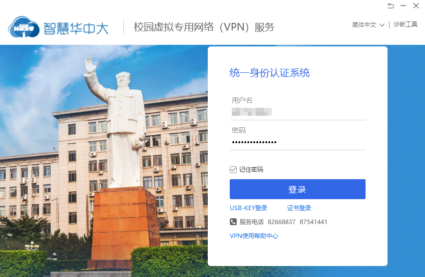
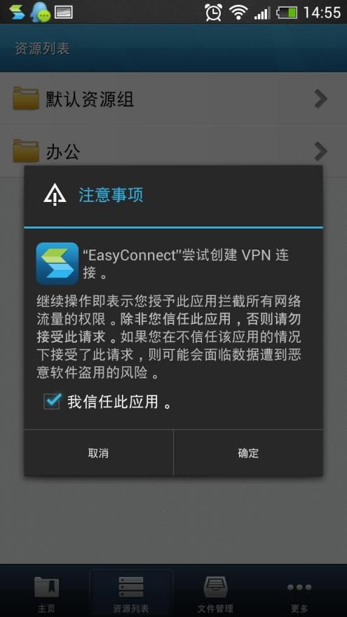

EasyConnect 到底值不值得掏钱？一个精打细算用户的真实算账
深信服 EasyConnect 是不少人远程办公的刚需 VPN 客户端，它的免费配额够不够日常用？付费版多花的钱能换来什么？这篇把三类用户的账算到每一个单位时间。
如果你是因为看到这篇标题点进来的，我猜你大概率有两种处境之一：要么是公司让你装一个 EasyConnect 用来远程连内网，心里犯嘀咕"这东西到底要不要自己掏钱升级"；要么是个人用户想搭个私有 VPN 做家用/小团队远程，在要不要买 EasyConnect 全家桶和免费方案之间纠结。
我属于后者，纠结了整整两周，把免费版的配额摸透了，也把付费档位的价差算得门儿清。这笔账我帮你掰扯明白，看完三秒钟对号入座。
先搞清楚：EasyConnect 到底卖的是什么
它不是一个普通的"VPN 客户端"。严格说 EasyConnect 是深信服 SSL VPN 网关体系下的客户端，客户端本身免费，真正花钱的是网关侧的授权。
这是理解整个定价逻辑的关键——很多人以为付的是客户端的钱，其实付的是"同时能有多少人连进来、每个人能拿多少资源"。
定价拆解：免费版给了什么，付费版多什么
先明确一个前提：客户端下载安装全程免费，easyconnect官网就能拿到各平台安装包。你装上之后，填一个网关地址 + 账号密码就能连——前提是那个网关的管理员给你开了权限。

所以分两种场景算：
场景 A：你是使用者（网关是公司/学校的）
你一分钱不用花。管理员那边花了多少钱，你只需要知道：
- 基础授权一般包含 Web 资源访问（最轻量的代理模式）
- TCP/L3VPN 资源（拿虚拟 IP 建隧道）可能需要额外授权，看单位买了哪档
- 远程应用发布功能同样取决于网关侧的授权
你的决策点不在"要不要掏钱"，而在"免费权限够不够我用"。这也是我之前踩的坑：以为远程应用功能被锁是自己没升级客户端，其实是单位网关压根没买这个模块。
场景 B：你是采购者（自己要买网关授权）
这才是真正需要算账的地方。我查了公开渠道能拿到的报价区间（以下数据来自深信服技术支持社区和代理商公开报价，实际以官方为准）：
| 授权档位 | 大致价格 | 包含的并发数 | 额外模块 |
|---|---|---|---|
| 基础版 | 一万出头 | 50 并发 | Web 资源 + 基础 TCP |
| 标准版 | 两万到三万 | 100 并发 | 加远程应用发布 |
| 高级版 | 五万以上 | 200+ 并发 | 加 aTrust 零信任集成、终端安全 |
还有一个容易忽略的细节：每增加 10 个并发，年服务费大约再加两千。这不是买一次性买断，而是年费制——到期不续费，网关功能降级到只剩 10 个基础并发。
算账：三类用户分别怎么选
轻度用户：偶尔连一下内网查个文件
典型画像：每周远程 1~2 次，每次半小时以内，只开 OA 看审批、查一下内部文档。
免费够不够？ 够，而且绰绰有余。单位网关的基础授权你几乎肯定能分到一个账号。Web 资源模式不需要建 VPN 隧道，电脑上没有虚拟网卡、手机上不会弹出 VPN 授权请求，体验最轻。

省钱建议：不需要任何付费。如果某天 Web 资源打不开 TCP 资源（比如想远程桌面），那找管理员开一下权限就行——大概率是单位网关没给你授权 TCP 模式，不是你个人要花钱。
主力用户：每天远程办公半天以上
典型画像：疫情以来养成居家办公习惯的上班族，每天至少 4 小时在内网系统里待着，偶尔要远程桌面连工位电脑。
免费够不够？ 基础的 Web 资源勉强能撑，但体验开始打折——内网系统复杂一点的话，Web 代理模式可能加载慢、控件兼容差（easyconnect文档里提到的 EasyLink 单资源代理模式能缓解，但得管理员开）。
TCP 资源（L3VPN 隧道）是主力用户的刚需。拿了虚拟 IP 之后，远程桌面、数据库客户端、C/S 架构的业务软件都能正常用。这部分能不能用还是取决于单位网关的授权档位——基础版网关可能只给了 Web。
个人要不要自掏腰包？ 别。给单位 IT 提个需求："我需要 L3VPN 资源权限来远程桌面"，IT 那边大概率能解决。实在不行，自己在家搭个 OpenVPN wireguard 也是免费方案。
重度用户：小团队老板/自由职业者，自己要搭网关
典型画像：你就是那个要买网关的人。3~10 人小团队需要一个统一的远程接入方案，或者你自己有好几台服务器想从外面连回来。
这才是 EasyConnect 付费价值真正所在的场景。我们来算单位时间成本：
假设你买一个标准版授权（100 并发），年费 2.5 万，团队 10 人在用，每人年均成本 2500 元。这 2500 元换来的是：
- 统一网关入口，不需要每个人自己配置 VPN
- 管理员能精细化控制每个人能访问哪些内网资源
- 远程应用发布——老电脑也能跑云端的 ERP 客户端
- 深信服的终端安全组件（高级版），相当于送了一套企业级杀毒
对比替代方案：用开源的 WireGuard + 自己搭管理后台，完全免费，但你得花至少 3 天时间部署、调试、维护。这 3 天时间对你来说值不值 2500 块？如果值，付费；如果不值，自己搭。
替代方案一览：不花这笔钱有什么路
既然在算"要不要掏钱"，就得把不掏钱的路也摆出来：
| 替代方案 | 成本 | 适合谁 | 代价 |
|---|---|---|---|
| 单位给的免费账号 | 0 | 90% 的普通员工 | 权限受管理员控制，远程应用等高级功能可能没有 |
| 开源 WireGuard/OpenVPN | 0 | 有一定技术基础的重度个人用户 | 自己部署维护，没有图形化管理 |
| Tailscale | 个人免费 / 团队月费 | 跨平台需求多的小团队 | 国内访问延迟可能不稳定 |
| 向日葵/ToDesk | 免费基础版 | 只需要远程桌面的轻度用户 | 不是真正的 VPN，不能访问内网网段 |
我自己试过免费的向日葵做远程桌面，够用；试过 WireGuard 搭私有 VPN，也能跑通内网访问。最终没掏钱买 EasyConnect，因为我只是个人用，免费方案完全覆盖。
结论：哪类人闭眼付，哪类人再等等，哪类人永远不用付
闭眼付费：小团队 5 人以上需要统一远程接入管理，而且不想花时间自己搭 WireGuard 后台的。标准版授权 + 每年续费，是省心的选择。特别是你们还要用到远程应用发布功能（老机器跑不动 ERP），这个功能自己搭的成本远高于买 EasyConnect 授权。
再等等：个人用户，想搭私有 VPN 但又不想折腾的。先用 Tailscale 免费版顶一段时间，等真正出现"免费不够用"的瓶颈再说——大概率你永远不会到那一步。真到了，再评估 EasyConnect 高级版 vs WireGuard 自建的维护成本差。
永远不用付：公司/学校已经给了账号的。你不需要也不应该自己买客户端升级——所有功能解锁都在网关侧，你个人客户端版本再高也没用。别被网上那些"破解版"忽悠，一是不安全，二是根本没用。
我踩过的坑
最后说几个自己花钱之前如果知道能省不少的事：
客户端版本不决定功能。我试过装最新版 7.6.9 的客户端，功能还是那些——真正解锁新功能的是网关侧的授权。客户端和网关版本要匹配，官方不支持跨大版本混搭，会连不上。
aTrust 是 EasyConnect 的续代产品。深信服最近在推 aTrust 零信任体系，新采购的网关默认配 aTrust 客户端而不是 EasyConnect。如果你刚买了 EasyConnect 网关，别急着跟着换——两个客户端都带 VPN 组件，长期共存会互相干扰路由。
国产系统不支持。统信 UOS、麒麟这些信创系统，EasyConnect 客户端跑不了。官方建议用 aTrust 体系的替代方案。这个是硬伤，如果你团队里有人用国产系统，提前算进预算里。
资料来源都在 APK 仓库的下载官网分类里，GitHub、Gitee、GitCode 三个平台都留了一份镜像，国内优先 Gitee 或 GitCode 访问快一些。